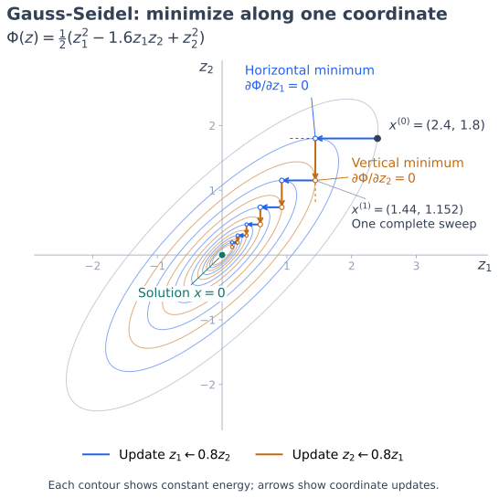
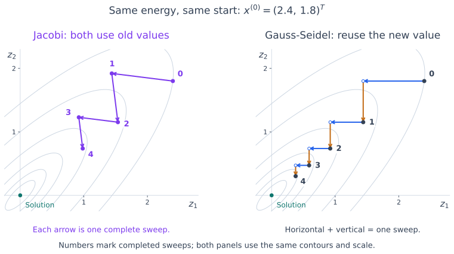

The Gauss-Seidel Iteration Method#
Gauss-Seidel iteration uses newly computed solution components as soon as they become available. This lets a correction influence later components within the same sweep through the unknowns. Jacobi, by comparison, uses only values from the preceding sweep.
We consider a real linear system \(Ax=b\), where \(A\) is nonsingular and has nonzero diagonal entries.
Splitting and Iteration#
Use the same sign convention as for Jacobi:
where \(D\) contains the diagonal entries, while \(-L\) and \(-U\) are the strictly lower and strictly upper triangular parts of \(A\).
Forward Gauss-Seidel uses \(M=D-L\) and \(N=U\). The splitting iteration is therefore
Since \(D-L\) is lower triangular, each sweep is a forward substitution. We denote the Gauss-Seidel iteration matrix by \(G\); it is \(R=M^{-1}N\) for this splitting:
In component form,
The first sum uses values already updated in this sweep. The second uses values that have not yet been updated.
Algorithm and Implementation#
A sweep can overwrite the solution vector in place. When updating component \(i\), the entries before it already contain new values, while those after it still contain old values.
These dependencies make a standard Gauss-Seidel sweep less parallel than Jacobi. Reusing new values often improves convergence, but the comparison depends on the matrix and the ordering of the unknowns.
Python Code Example#
As in the Jacobi implementation, the stopping criterion checks the scaled residual
This checks how accurately the equations are satisfied. Small changes between iterates alone can give a misleading stopping test.
import numpy as np
def gauss_seidel(A, b, x0=None, tol=1e-10, max_iter=1000):
"""Return (x, sweeps), stopping when the scaled residual is <= tol.
A and b are real arrays. Raise RuntimeError if the iteration limit
is reached without satisfying the stopping criterion.
"""
A = np.asarray(A, dtype=float)
b = np.asarray(b, dtype=float)
if b.ndim != 1 or A.shape != (b.size, b.size):
raise ValueError("A must be square and b a matching vector.")
if not np.isfinite(tol) or tol <= 0:
raise ValueError("tol must be positive and finite.")
if not isinstance(max_iter, (int, np.integer)) or max_iter < 0:
raise ValueError("max_iter must be a nonnegative integer.")
if np.any(np.diag(A) == 0):
raise ValueError("Gauss-Seidel requires nonzero diagonal entries.")
x = np.zeros_like(b) if x0 is None else np.array(x0, dtype=float, copy=True)
if x.shape != b.shape:
raise ValueError("x0 must have the same shape as b.")
norm_A = np.linalg.norm(A, ord=np.inf)
norm_b = np.linalg.norm(b, ord=np.inf)
for k in range(max_iter + 1):
r = b - A @ x
scale = norm_A * np.linalg.norm(x, ord=np.inf) + norm_b
if np.linalg.norm(r, ord=np.inf) <= tol * scale:
return x, k
if k < max_iter:
for i in range(b.size):
# x[:i] is new; x[i+1:] is still from the old sweep.
sigma = A[i, :i] @ x[:i] + A[i, i+1:] @ x[i+1:]
x[i] = (b[i] - sigma) / A[i, i]
raise RuntimeError("Gauss-Seidel did not converge within max_iter sweeps.")
The returned count is zero if the initial guess already satisfies the tolerance. The code also accepts the exact zero solution when both the residual and its scale are zero.
The implementation uses dense NumPy arrays. For sparse matrices, each row update needs only the nonzero entries in that row.
Conditions for Convergence#
By the splitting convergence theorem, Gauss-Seidel converges for every initial guess if and only if \(\rho(G)<1\). Two useful matrix properties guarantee this condition.
Theorem 42 (Convergence of the Gauss-Seidel Method)
Gauss-Seidel converges to the unique solution of \(Ax=b\) for every initial guess if either of the following holds:
\(A\) is strictly row diagonally dominant, \(|a_{ii}|>\sum_{j\ne i}|a_{ij}|\) for every \(i\), or strictly column diagonally dominant, \(|a_{jj}|>\sum_{i\ne j}|a_{ij}|\) for every \(j\).
\(A\) is symmetric positive definite (SPD).
These are sufficient conditions; neither is required for every convergent Gauss-Seidel iteration.
Proof for Strict Diagonal Dominance#
Proof. We show that an eigenvalue with magnitude at least one would force a strictly diagonally dominant matrix to be singular, which is impossible.
Suppose \(Gz=\lambda z\) with \(z\ne0\) and \(|\lambda|\ge1\). Multiplying by \(D-L\) gives
Thus \(B\) is singular. Its diagonal entries are \(\lambda a_{ii}\). Its lower triangular entries are \(\lambda a_{ij}\), and its upper triangular entries are \(a_{ij}\). Since \(|\lambda|\ge1\), every off-diagonal magnitude is at most \(|\lambda|\,|a_{ij}|\).
If \(A\) is strictly row diagonally dominant, then
Hence \(B\) is also strictly row diagonally dominant. If \(A\) is strictly column diagonally dominant, the same argument applied to column sums gives
For a strictly row diagonally dominant matrix, every Gershgorin disc excludes zero, so the matrix is nonsingular. For column dominance, apply the same argument to \(B^T\), which is nonsingular exactly when \(B\) is. In either case, \(B\) is nonsingular, contradicting \(Bz=0\). Therefore every eigenvalue of \(G\) has magnitude less than one, proving convergence.
Why Positive Definiteness Helps#
Recall that an SPD matrix satisfies \(A=A^T\) and \(v^TAv>0\) for every nonzero real vector \(v\). For such a matrix, we can measure the error using the energy norm
This is the Euclidean norm after weighting the eigenvector components by the square roots of the positive eigenvalues. To understand why it is useful, consider the quadratic energy
Here \(z\) is a candidate solution, while \(x=A^{-1}b\) is the exact solution. Completing the square gives
Thus minimizing the energy is equivalent to reducing the squared energy error. Hold every component except \(z_i\) fixed. The derivative along this coordinate is
Setting it to zero gives exactly the Gauss-Seidel component update, using the latest values of the other components. Since \(a_{ii}>0\), this is the unique minimum along that coordinate. Each update therefore moves parallel to one coordinate axis to the lowest energy on that line. Two such moves make a complete sweep in two dimensions.


Fig. 21 Coordinate minimization for \(A=\begin{pmatrix}1&-0.8\\-0.8&1\end{pmatrix}\) and \(b=0\). Starting at \(x^{(0)}=(2.4,1.8)^T\), first minimize along the horizontal direction, then along the vertical direction. One sweep gives \(x^{(1)}=(1.44,1.152)^T\). At each endpoint, the contour is tangent to the direction just followed: the derivative in that direction is zero. Further sweeps approach the solution \(x=0\).#
A complete sweep reduces the energy error unless the solution has already been reached. The plot makes this decrease visible through successively smaller ellipses.
For comparison, apply Jacobi to the same system from the same starting point. Both new coordinates use the old vector, so its first sweep gives
Gauss-Seidel instead uses the new first coordinate \(1.44\) in the second update, giving \(0.8(1.44)=1.152\). The next figure shows four sweeps computed with each method. Jacobi moves back and forth across the long axis of the ellipses, while Gauss-Seidel follows successive coordinate minima and approaches the solution faster in this example.


Fig. 22 Actual iterates for the same quadratic energy as above, with identical axes and contours. Filled points numbered \(0\) through \(4\) mark completed sweeps. On the left, each arrow connects two Jacobi iterates; it represents a simultaneous update, not minimization along the segment. On the right, blue horizontal and orange vertical arrows show the two Gauss-Seidel component updates; open circles mark the intermediate points.#
Gauss-Seidel’s energy decrease explains the geometry, but strict decrease alone is not enough to prove convergence to zero. The optional proof below establishes a fixed reduction factor less than one that works for every error direction.
Proof for Symmetric Positive Definite Matrices#
Note
This proof is optional. It involves more advanced mathematical arguments and is intended for students who want to deepen their understanding. You can skip it on a first reading.
Proof. Assume \(A=A^T\) is positive definite, and put \(M=D-L\). Each diagonal entry satisfies \(a_{ii}=e_i^TAe_i>0\), where \(e_i\) is the \(i\)th coordinate vector. Thus \(D\) is positive definite and \(M\) is nonsingular. Symmetry gives \(U=L^T\), hence
Let \(e\) be the error before a sweep. The error after the sweep is \(Ge\), where
Write \(s=Ge-e\) for the change in the error during this sweep. It satisfies
Expand the change in squared energy norm:
The third line uses \(Ae=-Ms\). The fourth uses the scalar identity \(s^TMs=s^TM^Ts\).
If \(e\ne0\), then \(s\ne0\): otherwise \(Ms=-Ae\) would give \(Ae=0\), contradicting the nonsingularity of \(A\). Since \(D\) is positive definite, we obtain
To finish, we need a reduction factor that works for every error direction. Since \(A\) is positive definite, the energy unit sphere \(\|e\|_A=1\) is a closed, bounded ellipsoid and hence compact. The continuous function \(e\mapsto\|Ge\|_A\) attains its maximum there. Every value is strictly less than one, so this maximum, call it \(\gamma\), satisfies \(0\le\gamma<1\).
Scaling any error vector to unit energy norm then gives \(\|Ge\|_A\le\gamma\|e\|_A\). Repeating this bound yields
Therefore Gauss-Seidel converges for every initial guess.
The energy identity explains why symmetry and positive definiteness matter: each sweep reduces the squared energy error by a sum of positive diagonal weights times squared component corrections. This decrease is in the \(A\)-norm; the Euclidean error need not decrease at every sweep. For another energy-norm proof, see Fass, Theorem 4.19.
Practical Considerations#
For the standard five-point Poisson problem on a square grid with red-black ordering, Gauss-Seidel converges about twice as fast as Jacobi in terms of sweeps. Its spectral radius satisfies \(\rho(G)=\rho(R_J)^2\), so one Gauss-Seidel sweep gives the same asymptotic decay factor as two Jacobi sweeps. It therefore needs about half as many sweeps for the same error reduction. This comparison is specific to this model problem; it is not a general guarantee or a claim about elapsed computing time. The Poisson-grid comparison in the SOR section illustrates these rates.
Guaranteed convergence can still be slow. Gauss-Seidel is useful both as a simple solver and as a component of more advanced methods. The next section introduces SOR, which adjusts the component corrections through a relaxation parameter.